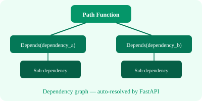

from fastapi import FastAPI, Depends, Header, HTTPException
app = FastAPI()
# Simple dependency
def common_params(q: str = None, skip: int = 0, limit: int = 100):
return {"q": q, "skip": skip, "limit": limit}
@app.get("/items/")
def read_items(commons: dict = Depends(common_params)):
return commons
# Dependency with validation
def verify_token(x_token: str = Header(...)):
if x_token != "secret":
raise HTTPException(status_code=401)
return x_token
@app.get("/protected/")
def protected(token: str = Depends(verify_token)):
return {"message": "Access granted"}
# Class-based dependency
class CommonQueryParams:
def __init__(self, q: str = None, skip: int = 0, limit: int = 100):
self.q = q
self.skip = skip
self.limit = limit
@app.get("/users/")
def read_users(commons: CommonQueryParams = Depends()):
return commons
# Sub-dependencies (Dependency graph)
def query_extractor(q: str = None):
return q
def query_or_body_extractor(q: str = Depends(query_extractor)):
return q or "default"
@app.get("/search/")
def search(query: str = Depends(query_or_body_extractor)):
return {"query": query}